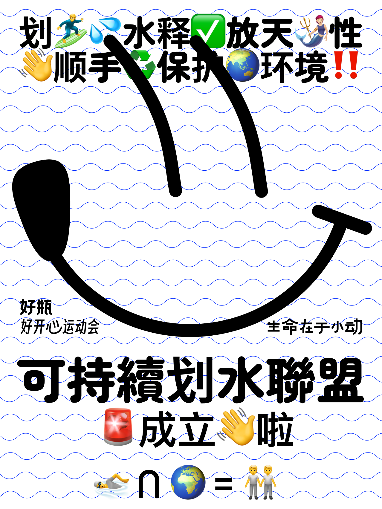

Sustainable Waves
Sustainability x Movement
Sept.2024 - Present
Sustainable Waves is a nationwide initiative jointly launched by Mini Moves Matter and Happy Motion Games. The program collaborates with water sports clubs to combine engaging aquatic activities with ocean conservation efforts.
Participants can enjoy sports like paddleboarding and kayaking while contributing to environmental protection by collecting litter from water bodies. Members receive specially crafted litter collection nets made from recycled fishing materials.
The initiative promotes sustainable practices, encourages community action, and fosters awareness to protect our shared water environments.
gansters' contribution ✍️
- Developing the brand design and main visuals to promote a lifestyle centered on physical and mental well-being.
- Conducting research on the target audience to gain insights into their preferences and expectations.
- Creating a cohesive visual identity that uses carefully chosen colors, typography, and imagery to convey a balance of energy, calmness, and wellness.
- Through these efforts, we helped design a project that inspires movement and fosters a sense of connection and positivity.
Selected visuals
